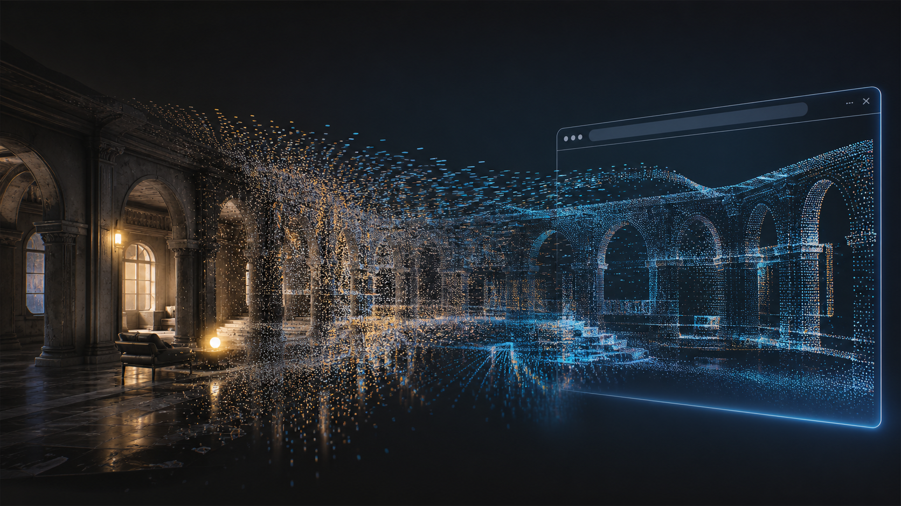
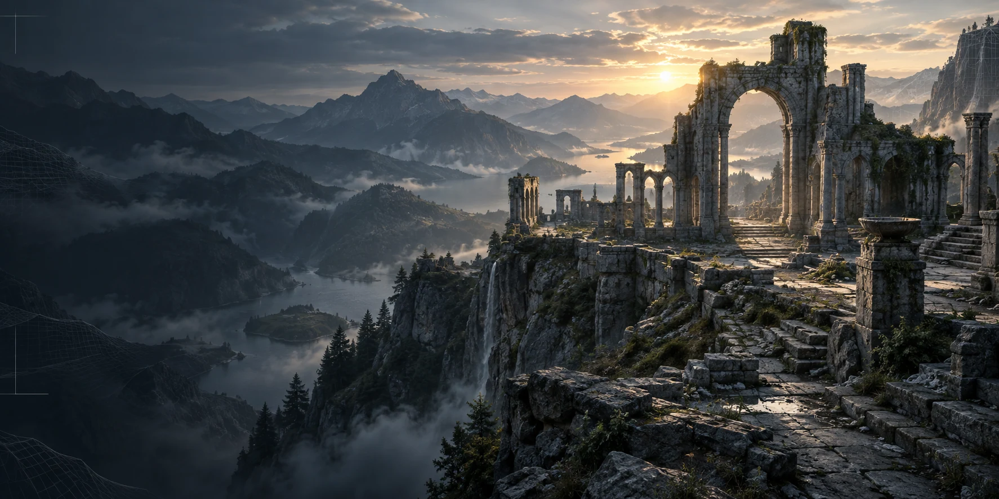
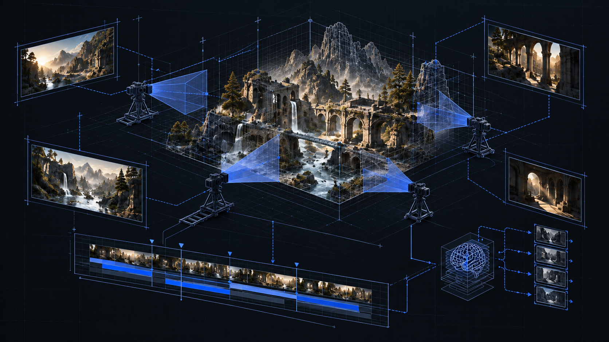
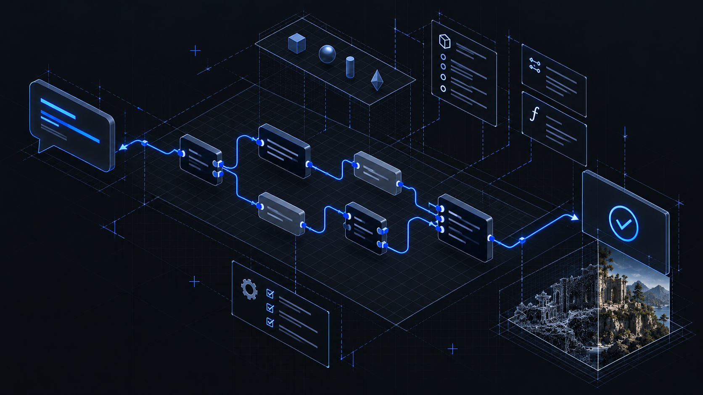
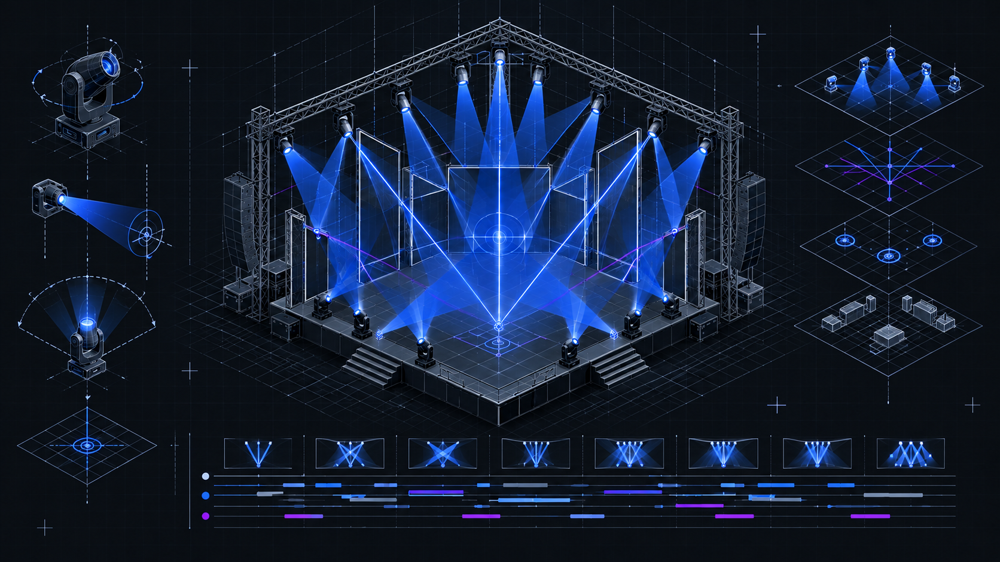

Lead programming / Unreal Engine to web
DirectSplat
A one-click plugin that captures an Unreal environment, runs the conversion pipeline, and delivers a web-ready 3D Gaussian splat.
View case studyReal-timeToolsWorldsWeb
I build production Unreal Engine plugins and automated pipelines that turn complex workflows into dependable tools teams can use.

Selected projects
Plugin architecture, intelligent automation, real-time control, and connected web experiences.

Lead programming / Unreal Engine to web
A one-click plugin that captures an Unreal environment, runs the conversion pipeline, and delivers a web-ready 3D Gaussian splat.
View case study
AI cinematography
Scene-aware camera rigs, shots, and editable sequences created from creative direction.
View project
AI editor tooling
Natural-language requests transformed into compiled, connected Blueprint assets.
View project
Creative tooling
Reusable concert lighting, beam, laser, and focus control built inside Unreal Engine.
View project
Real-time production
A complete system for authoring, automating, rendering, and publishing virtual shows.
View projectCore expertise
I work where engine systems, production tooling, performance, and browser delivery meet.
C++ modules, editor interfaces, Blueprint systems, packaging, and connected authorization.
One-click workflows, scene analysis, intelligent capture, asynchronous processing, and recovery.
GPU pipelines, rendering integration, media systems, optimization, and live production tools.
Browser communication, APIs, WebSockets, Pixel Streaming, and interactive 3D delivery.
About Hassan
I am an Unreal Engine developer and systems programmer based in Pakistan. I design the architecture behind ambitious real-time products, then shape it into a clear workflow for the people using it.
Available for select projects